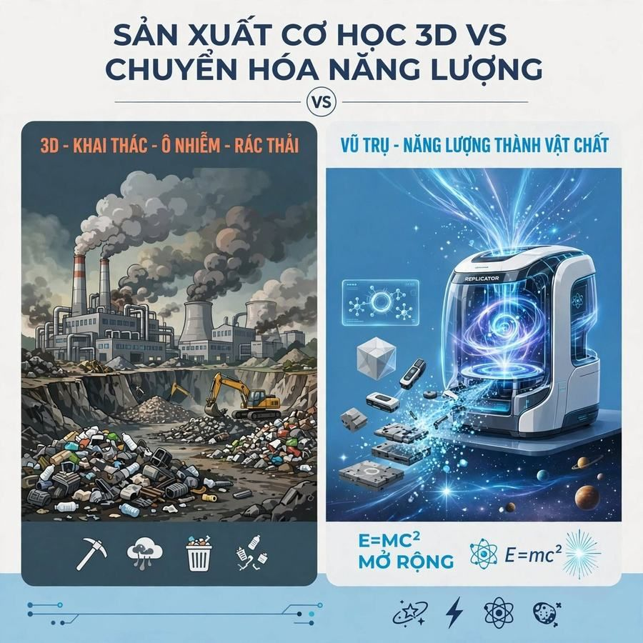
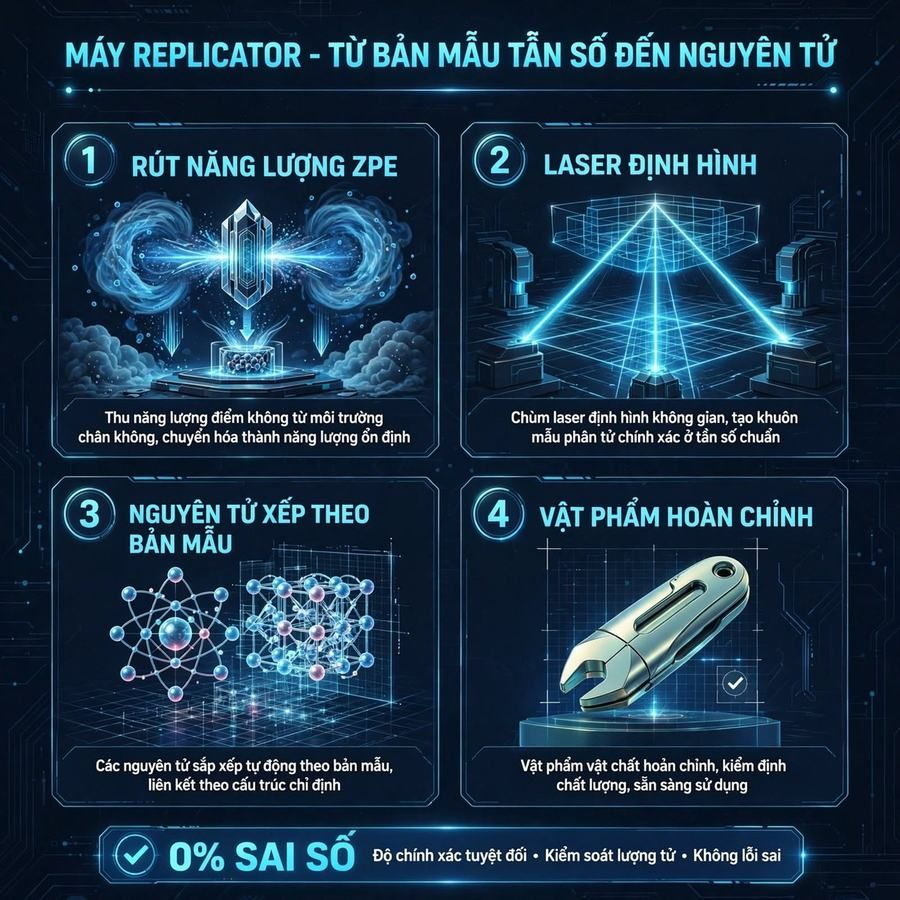
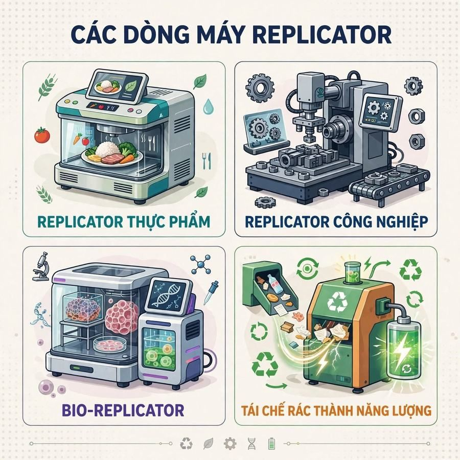
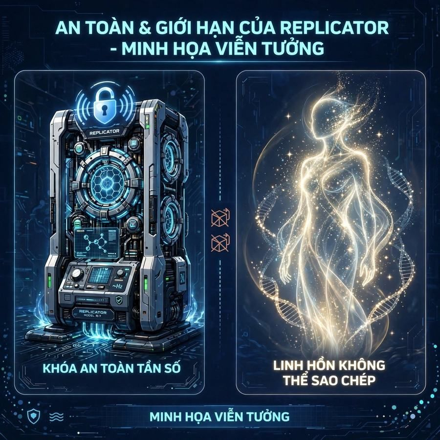

Trang chủ / Chuyên đề 8: Khoa Học & Công Nghệ / Kỳ 76
Chuyên đề 8 · Kỳ 76 / 90
CÔNG NGHỆ TÁI TẠO VẬT CHẤT (REPLICATORS) & IN SINH HỌC LƯỢNG TỬ

Bạn đã bao giờ tự hỏi: Điều gì sẽ xảy ra nếu loài người không còn phải khai thác mỏ khoáng sản, không còn phải chăn nuôi giết mổ động vật, không còn những nhà máy thải khói độc hại ra môi trường, và bất kỳ ai cũng có thể tạo ra một đĩa thức ăn nóng hổi, một bộ quần áo hoàn hảo hay một thiết bị kỹ thuật phức tạp chỉ trong vài giây ngay tại nhà?
Trong nền kinh tế 3D thô hiện tại của Trái Đất, toàn bộ chuỗi sản xuất xã hội được xây dựng trên sự khan hiếm tài nguyên: Muốn có vật phẩm, con người phải khai thác tài nguyên thiên nhiên, vận chuyển, đưa vào nhà máy chế biến, gia công cơ học, phân phối qua mạng lưới thương mại và gánh chịu vô số chi phí trung gian. Quy trình này sinh ra sự độc quyền, ô nhiễm môi trường, sự phân hóa giàu nghèo và các cuộc chiến tranh giành quyền kiểm soát nguồn cung.
Tuy nhiên, đối với các nền văn minh thiên hà tiên tiến, vật chất không phải là một thực thể cố định khan hiếm, mà chỉ là Năng lượng được cô đọng ở một dải tần số cụ thể (Energy-to-Matter Conversion)!
Bằng cách làm chủ Công nghệ Tái tạo Vật chất (Replicators / Molecular Synthesizers) và Kỹ thuật In Sinh học Lượng tử (Quantum Bio-Printing), họ có thể chuyển hóa trực tiếp nguồn năng lượng Ether vô hạn thành bất kỳ nguyên tử, phân tử hay vật thể vật lý nào với độ chính xác tuyệt đối ở cấp độ dưới nguyên tử.
Hãy cùng bước vào thế giới khoa học tối thượng của thiên hà để giải mã trọn vẹn nguyên lý vận hành của Máy Tái tạo Vật chất Replicators, Thư viện Bản mẫu Tần số Etheric, Kỹ thuật In Sinh học Lượng tử và Sự hình thành Xã hội Siêu Dồi dào (Post-Scarcity Society)!
✦ ✦ ✦1. BỐI CẢNH VÀ SỰ KHÁC BIỆT NỀN TẢNG: SẢN XUẤT CƠ HỌC 3D VS CHUYỂN HÓA NĂNG LƯỢNG VŨ TRỤ
Để hiểu được bước nhảy vọt của công nghệ Replicator, trước hết chúng ta cần nhìn lại sự hạn chế mang tính lịch sử của các phương pháp sản xuất truyền thống trên Trái Đất.
A. Sự Hạn chế của Chuỗi Sản xuất Cơ học 3D
- Phụ thuộc vào Tài nguyên Thô: Nền sản xuất 3D đòi hỏi phải đào xới vỏ Trái Đất để lấy quặng kim loại, khai thác dầu mỏ, chặt phá rừng và chăn nuôi gia súc quy mô công nghiệp.
- Tỷ lệ Hao phí và Rác thải Cao: Quá trình gia công gọt đẽo, đúc nặn vật chất sinh ra lượng phế thải khổng lồ. Rác thải nhựa, rác thải công nghiệp và khí thải độc hại làm ô nhiễm nặng nề đất, nước và bầu khí quyển.
- Sai số Vật lý và Sự Lão hóa Vật liệu: Các sản phẩm cơ học luôn tồn tại sai số gia công, dễ bị ăn mòn, gỉ sét và đứt gãy cấu trúc sau một thời gian sử dụng.
B. Nguồn gốc Vật lý Lượng tử của Công nghệ Replicator: Phương trình E=mc² Mở rộng
Khoa học thiên hà tiên tiến ứng dụng trọn vẹn bản chất của vũ trụ:
- Mối liên hệ giữa Năng lượng và Vật chất: Theo nguyên lý vật lý thiên hà, Năng lượng (Energy) và Vật chất (Matter) chỉ là hai trạng thái khác nhau của cùng một bản thể gốc. Vật chất chính là "Năng lượng bị làm chậm nhịp độ dao động" đến mức ngưng tụ thành các hạt cơ bản (Proton, Neutron, Electron).
- Quá trình Chuyển hóa Hai chiều: Nếu vật chất có thể bị phân rã thành năng lượng (như trong các phản ứng hạt nhân), thì ngược lại, Năng lượng hoàn toàn có thể được định hình và ngưng tụ trở lại thành Vật chất nếu ta kiểm soát được Bản đồ Tần số Lượng tử của nó!

2. NGUYÊN LÝ HOẠT ĐỘNG CỦA MÁY REPLICATOR: TỪ BẢN MẪU TẦN SỐ ĐẾN NGUYÊN TỬ VẬT LÝ
Máy Replicator không phải là một chiếc máy in 3D đun chảy nhựa hay kim loại thô rồi phun ra từng lớp. Đây là một Hệ thống Chuyển hóa và Sắp xếp Nguyên tử Lượng tử (Quantum Atomic Restructuring System).
A. Thư viện Bản mẫu Tần số Etheric (Etheric Frequency Pattern Library)
- Ma trận Thông tin Nguyên tử (Atomic Matrix Blueprint): Máy Replicator chứa một bộ nhớ lượng tử khổng lồ lưu trữ bản thiết kế tần số của hàng triệu vật phẩm — từ một chiếc ly tinh thể, một chiếc đinh ốc hợp kim, một bộ trang phục sinh học cho đến một đĩa thức ăn phức tạp.
- Định danh chính xác từng Nguyên tử: Bản mẫu này không chỉ ghi nhớ hình dáng bên ngoài mà lưu trữ chính xác vị trí, liên kết hóa học, dải tần số dao động và cấu hình electron của từng nguyên tử cấu tạo nên vật phẩm đó.
B. Quy trình Ngưng tụ Năng lượng thành Vật chất (Atomic Condensation Process)
Khi người sử dụng chọn một vật phẩm từ bảng điều khiển hoặc phóng chiếu ý định tâm thức:
- Rút Năng lượng từ Lò Phản ứng ZPE: Máy Replicator rút một lượng năng lượng Ether tinh khiết từ Lò phản ứng Năng lượng Điểm Không (Zero-Point Energy).
- Chiếu Chùm Laser Lượng tử Định hình (Quantum Vector Beam): Máy phát ra các chùm ánh sáng plasma tần số cao bên trong buồng tái tạo. Các chùm laser này đóng vai trò như những "ngón tay năng lượng" kích thích trường Ether ngưng tụ thành các hạt Proton, Neutron và Electron.
- Sắp xếp Nguyên tử theo Bản thiết kế: Trong vòng vài giây, hàng tỷ tỷ nguyên tử Carbon, Hydro, Oxy, Iron, Gold... được tạo ra và tự động xếp vào đúng vị trí không gian 3 chiều theo đúng bản mẫu thông tin.
- Hoàn thành Vật phẩm: Màn ánh sáng biến mất, vật phẩm xuất hiện hoàn chỉnh 100% với cấu trúc vật lý thực tế, nóng hổi hoặc mát lạnh đúng theo nhiệt độ tiêu chuẩn, sẵn sàng sử dụng ngay lập tức!

3. PHÂN LOẠI CÁC DÒNG MÁY REPLICATOR TRONG XÃ HỘI VŨ TRỤ
Tùy thuộc vào quy mô và mục đích sử dụng, công nghệ Replicator được chia thành ba dòng máy chính phục vụ cho mọi khía cạnh đời sống của các nền văn minh thiên hà:
A. Replicator Thực phẩm & Sinh hoạt (Food & Household Replicators)
- Thay thế hoàn toàn Nông nghiệp thô & Giết mổ: Cư dân thiên hà không cần trồng trọt rau củ trên đất bẩn hay sát hại động vật để lấy thịt. Máy Replicator thực phẩm tạo ra các món ăn chứa trọn vẹn hàm lượng dinh dưỡng, protein, vitamin và hương vị tự nhiên tuyệt hảo.
- Tái tạo Thực phẩm ở Cấp độ Phân tử: Một đĩa súp hay một miếng protein được in ra có cấu trúc phân tử hoàn toàn giống hệt, thậm chí thuần khiết hơn thực phẩm tự nhiên vì không chứa bất kỳ vi khuẩn, hóa chất hay năng lượng sợ hãi từ sự sát sinh.
- Tái chế Rác thải thành Năng lượng (Recycling): Khi dùng xong bữa ăn hay không còn nhu cầu sử dụng một vật dụng cũ, cư dân chỉ cần đặt chiếc đĩa hoặc đồ dùng đó trở lại buồng Replicator. Máy sẽ tiến hành quy trình ngược lại: Phân rã các liên kết nguyên tử của vật dụng trở lại thành năng lượng Ether thuần khiết để lưu trữ cho lần tái tạo tiếp theo!
B. Replicator Vật liệu & Công cụ Công nghiệp (Industrial Replicators)
- Sản xuất Linh kiện & Hợp kim Siêu dẫn: Được sử dụng trên các phi thuyền và trạm không gian để tạo ra các linh kiện thay thế, các cuộn cảm siêu dẫn, vỏ hợp kim tinh thể hay các công cụ kỹ thuật phức tạp.
- Độ chính xác Tuyệt đối 0% Sai số: Do các nguyên tử được xếp vào vị trí ở cấp độ lượng tử, các vật liệu được in ra đạt độ bền cơ học và độ thuần khiết hóa học tuyệt đối, loại bỏ hoàn toàn các lỗi nứt ngầm hay tạp chất vật liệu.
C. Replicator Sinh học & In Tế bào Gốc (Bio-Replicators)
- Ứng dụng trong Y học Lượng tử: Được kết nối trực tiếp với hệ thống Buồng Y tế Med-Beds (đã giới thiệu ở Kỳ 3). Máy Bio-Replicator có khả năng in ra các mảng mô sinh học, da nhân tạo, mạch máu và tế bào gốc tương thích 100% với mã di truyền DNA của bệnh nhân để phục vụ việc ghép nối và chữa lành thương tổn.

4. SỰ AN TOÀN VÀ HẠN CHẾ CỐT LÕI CỦA CÔNG NGHỆ REPLICATOR
Một công nghệ có khả năng biến năng lượng thành bất kỳ vật chất nào nếu rơi vào tay kẻ xấu có thể gây ra những thảm họa lớn. Do đó, các nền văn minh tiên tiến đã thiết lập những Quy tắc An toàn Tần số tuyệt đối:
A. Khóa Bảo mật Di truyền & Tần số An toàn (Frequency Lock & Safety Protocols)
- Cấm Tái tạo Vũ khí Hủy diệt: Máy Replicator dân dụng được cài đặt các thuật toán khóa an toàn. Nó hoàn toàn từ chối in ra các loại vũ khí hạt nhân, chất độc sinh học, vi-rút nguy hiểm hay các vật chất phóng xạ có hại.
- Bảo mật theo Mức độ Tâm thức: Để in ra các vật liệu năng lượng cao hoặc linh kiện quân sự chuyên dụng, người thao tác phải có quyền truy cập mã di truyền và dải tần số tâm thức ở mức độ tương ứng.
B. Giới hạn Tuyệt đối: Máy Replicator Không thể In ra "Linh hồn"!
- Vật chất có Ý thức vs Vật thể Vô hồn: Máy Replicator có thể in ra một thể xác sinh học hoàn chỉnh về mặt tế bào (như một cơ thể người hay một con vật), nhưng cơ thể đó sẽ chỉ là một cái xác không có sự sống (Stasis Shell).
- Sự Thượng đẳng của Ý thức Vũ trụ: Máy móc không bao giờ có thể tạo ra một Linh hồn (Soul Spark / Monad) hay trường tâm thức đa chiều. Linh hồn là món quà thiêng liêng duy nhất phát xuất từ Nguồn Vũ Trụ (The Source), không một công nghệ hay máy tính lượng tử nào có thể sao chép hay tái tạo được!

5. TÁC ĐỘNG TỔNG THỂ: SỰ HÌNH THÀNH XÃ HỘI SIÊU DỒI DÀO (POST-SCARCITY SOCIETY)
Sự xuất hiện của công nghệ Replicator kết hợp với Năng lượng Điểm Không (Kỳ 4) chính là hai trụ cột đập tan hoàn toàn cấu trúc xã hội nô dịch 3D, mở ra Kỷ nguyên Xã hội Siêu Dồi dào (Post-Scarcity Economy) trong toàn bộ thiên hà.
A. Xóa bỏ Hoàn toàn Tiền tệ, Nợ nần và Sự Tiêu dùng Nô dịch
- Không còn Sự Khan hiếm: Khi mọi nhu cầu cơ bản về ăn, mặc, ở, công cụ sinh hoạt và y tế đều được tạo ra miễn phí từ nguồn năng lượng Ether thông qua máy Replicator, khái niệm "tích trữ tài sản" hay "tranh giành nguồn sống" hoàn toàn mất đi ý nghĩa.
- Biến mất của Tiền tệ thô: Tiền tệ — vốn là công cụ đo lường sự khan hiếm và kiểm soát lao động trong dải 3D — hoàn toàn không còn tồn tại trong các xã hội 5D tiên tiến.
B. Giải phóng Con người để Phát triển Tâm thức & Sáng tạo
- Từ "Tồn tại" sang "Sống và Sáng tạo": Cư dân không còn phải dành 8-12 tiếng mỗi ngày để làm những công việc nhàm chán, nặng nhọc chỉ để kiếm tiền mua thức ăn hay chi trả tiền nhà.
- Cống hiến vì Niềm vui: Mọi cá nhân được hoàn toàn tự do dành thời gian nghiên cứu khoa học, sáng tạo nghệ thuật, phát triển tâm linh và cống hiến năng lực cho cộng đồng dựa trên niềm đam mê thuần khiết của bản thân!
6. BÀI HỌC VÀ KỶ NGUYÊN TỰ DO VẬT CHẤT DÀNH CHO NHÂN LOẠI TRÁI ĐẤT
Sự hiểu biết về Công nghệ Tái tạo Vật chất Replicators & In Sinh học Lượng tử mang lại những bài học và tầm nhìn định hướng vĩ đại cho tương lai của nhân loại Trái Đất:
- Chuyển đổi Tâm thức từ "Khan hiếm" sang "Dồi dào": Sự khan hiếm tài nguyên trên Trái Đất hiện nay phần lớn là do sự thao túng và kiểm soát của các tập đoàn bóng tối. Khi nhân loại nâng cao tần số nhận thức và đón nhận các công nghệ vũ trụ, sự dồi dào sẽ trở thành thực tại tự nhiên của tất cả mọi người.
- Khôi phục Hành tinh Trái Đất Xanh sạch tuyệt đối: Công nghệ Replicator và tái chế lượng tử sẽ chấm dứt hoàn toàn ngành công nghiệp khai khoáng tàn phá thiên nhiên, xóa bỏ hoàn toàn rác thải nhựa và đưa Trái Đất trở lại trạng thái một viên ngọc sinh thái nguyên sơ rực rỡ!